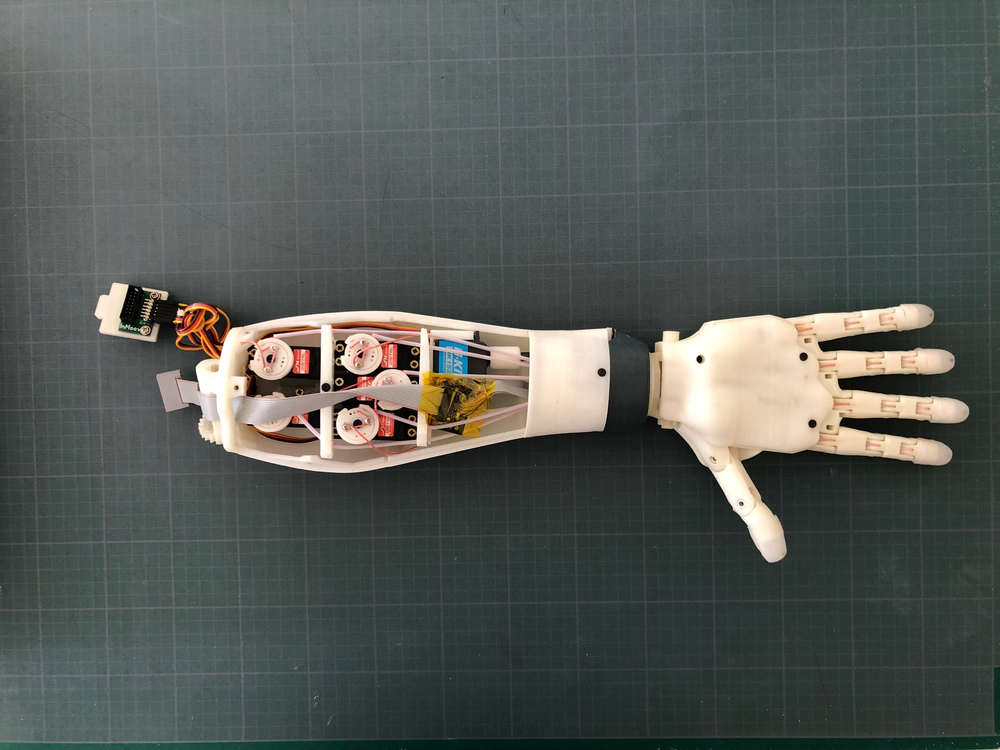

This project focuses on the duplication of an open-source multi-finger robotic hand based on the InMoov Hand i2. The aim is to build a fully functional hand using 3D-printed components, embedded control systems, and actuator integration.
The project will also explore basic application scenarios, such as vision-based teleoperation and potential integration with intelligent systems for human-like interaction and control.
* This project is a WIP, this page will be updated as progress is made *
